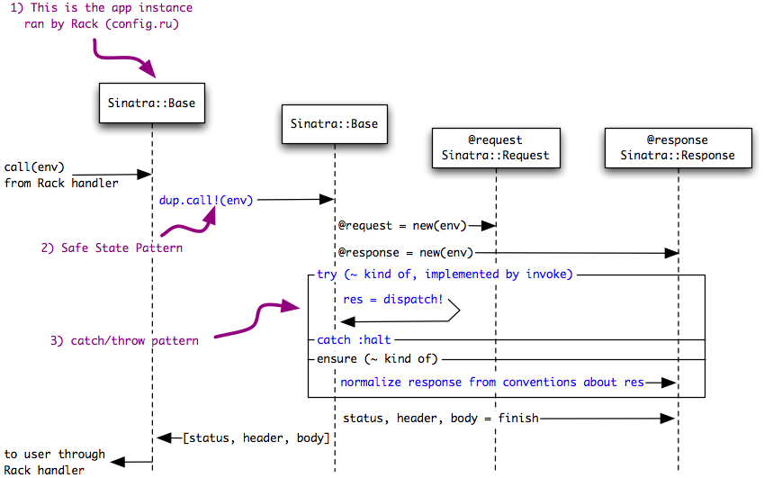

<map name="1-rack-call">
	<area shape=rect coords="349,390,490,407" href="https://github.com/sinatra/sinatra/blob/master/lib/sinatra/base.rb#L766-771">
	<area shape=rect coords="378,324,497,341" href="https://github.com/sinatra/sinatra/blob/master/lib/sinatra/base.rb#L800-811">
	<area shape=poly coords="201,372,201,385,75,385,75,372,201,372" href="throwCatch()">
	<area shape=poly coords="185,269,185,282,63,282,63,269,185,269" href="safeState()">
	<area shape=poly coords="192,5,192,29,33,29,33,5,192,5" href="configDotRu()">
	<area shape=rect coords="378,415,717,433" href="https://github.com/sinatra/sinatra/blob/master/lib/sinatra/base.rb#L772-795">
	<area shape=rect coords="349,368,438,386" href="https://github.com/sinatra/sinatra/blob/master/lib/sinatra/base.rb#L766-771">
	<area shape=rect coords="349,295,640,313" href="https://github.com/sinatra/sinatra/blob/master/lib/sinatra/base.rb#L766-771">
	<area shape=rect coords="174,213,285,231" href="https://github.com/sinatra/sinatra/blob/master/lib/sinatra/base.rb#L581-583">
</map>

